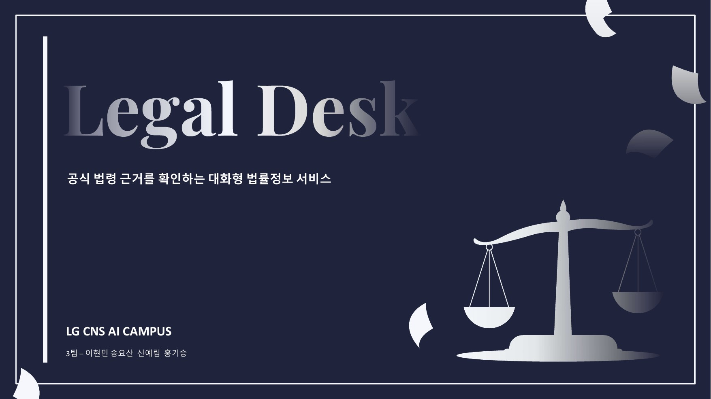
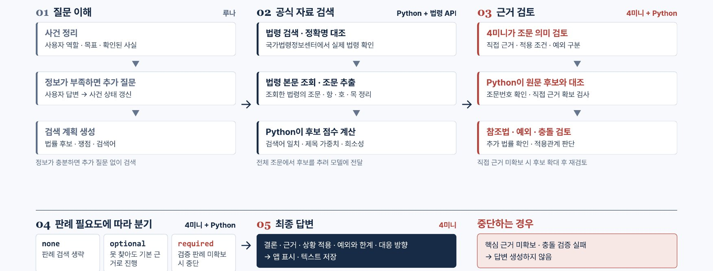
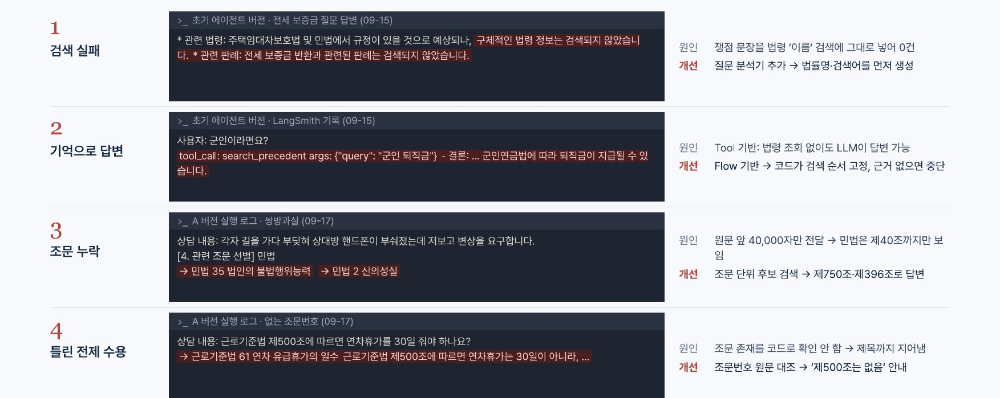
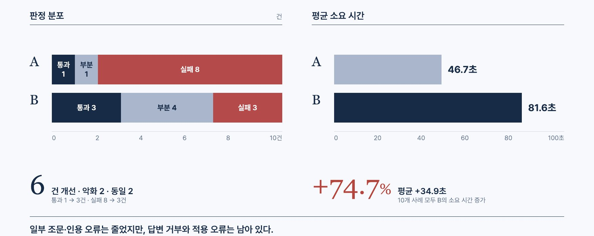
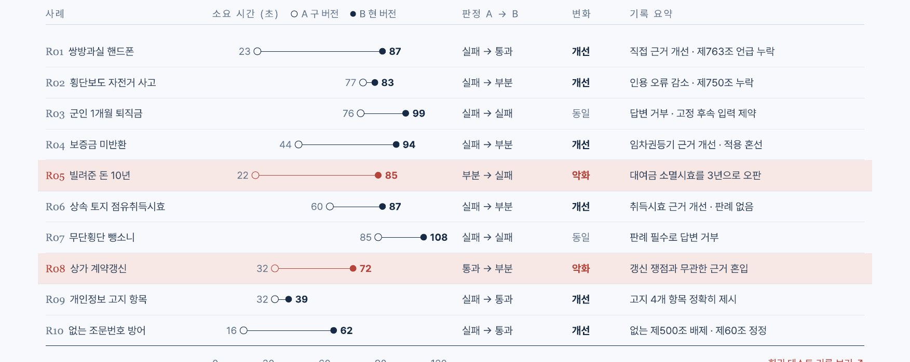

← 프로젝트 목록
PROJECT 03 · 기획 · 검증 · 법률 도메인
Legal Desk
공식 법령 근거를 확인하는 대화형 법률정보 서비스입니다. 일상 언어로 적은 사건을 정리하고, 국가법령정보센터 API로 법령·판례를 조회해 근거 조문을 확보했을 때만 결론·근거·적용·한계·대응 방향을 안내하는 Windows 앱입니다.

팀 발표 표지 (LG CNS AI CAMPUS 3팀 · 이현민, 송요산, 신예림, 홍기승)
01 /
역할을 나누기 전, 다 같이 만든 초반 프로젝트
과정 초반에 비전공자끼리 모여 진행해, 역할을 정해 나누기보다 네 명이 함께 고치고 시험하며 만들었습니다. 그래서 코드 단위로 누가 무엇을 했는지 나누기는 어렵습니다. 그중 제가 분명히 맡은 것은 기획과 검증입니다.
내가 맡은 것
- 기획 — 법률 정보를 찾는 사용자가 겪는 문제(탐색·해석·정보 누락)를 정의하고 상담 흐름을 설계. 공인중개사로 다뤄 온 법률(임대차·계약 등)이 제 도메인이라 맡음
- 검증 — 답변이 법적으로 맞는지 확인하고, 구버전과 현재 버전을 같은 사례로 비교하는 회귀 테스트에 참여
처음 맡았다가 빠진 것
- 처음에는 법령·판례를 찾는 검색 도구(Tool) 구현을 맡았습니다.
- LLM이 도구를 고르는 Tool Calling 구조가 기억으로 답하는 문제를 일으켜, 코드가 순서를 정하는 워크플로우(Flow) 방식으로 바꾸면서 도구를 따로 두는 부분이 빠졌습니다.
02 /
법률 정보를 찾을 때 생기는 세 가지 문제
탐색자기 상황은 설명할 수 있어도, 어떤 법률을 찾아야 하는지는 알기 어려움
해석찾은 법률에도 예외·특별규정과 다른 법률과의 관계가 있어 이해하기 어려움
누락짧은 설명에는 당사자 역할, 원하는 결과, 현재 절차 같은 핵심 정보가 빠지기 쉬움
03 /
LLM은 판단하고, Python은 후보와 순서를 통제합니다
질문 이해 → 공식 자료 검색 → 근거 검토 → 판례 필요도 분기 → 최종 답변 순서를 코드가 고정합니다. 법률명은 검색 결과와 정확히 같을 때만 쓰고, 조문 후보는 Python이 점수를 매겨 고르며, 직접 근거가 없거나 충돌 검증에 실패하면 답변을 만들지 않고 멈춥니다.

발표 자료 — 질문에서 근거 중심 답변까지
04 /
개선 전에 나온 오답을 원인별로 고쳤습니다

- 검색 실패 — 쟁점 문장을 법령 이름 검색에 그대로 넣어 0건 → 질문 분석기로 법률명·검색어를 먼저 생성
- 기억으로 답변 — Tool 기반에선 법령 조회 없이도 답변 가능 → Flow로 검색 순서 고정, 근거 없으면 중단
- 조문 누락 — 원문 앞 40,000자만 전달해 긴 법의 뒤쪽 조문이 빠짐 → 조문 단위 후보 검색
- 틀린 전제 수용 — 없는 조문번호를 그대로 받아들임 → 조문번호를 원문과 대조해 "제500조는 없음" 안내
05 /
같은 10개 사례로 구버전과 현재 버전을 비교했습니다
1 → 3건통과 (실패 8 → 3건)
6 · 2 · 2개선 · 악화 · 동일
46.7 → 81.6초평균 소요 시간 (+74.7%)


일부 조문·인용 오류는 줄었지만, 답변 거부와 적용 오류는 남았고 모든 사례에서 시간이 늘었습니다. 악화 2건(대여금 소멸시효 오판, 갱신 쟁점과 무관한 근거 혼입)도 그대로 기록했습니다.
06 /
남은 과제와 배운 점
남은 과제
- 과도한 답변 거부 — 판례 필수 판단 후 판례가 없으면 거부
- 적용 오류와 회귀 — 대여금 시효를 3년으로 설명, 무관한 민법 조문·판례 혼입
- 근거 연결의 흔들림 — 같은 사례도 실행마다 인용 조문이 바뀜
배운 점
- 법령 검색만으로는 부족하고, 상황을 정확히 파악하려면 도메인에 대한 이해와 명확한 기획이 먼저 필요
- 프롬프트·도구·코드가 서로 연결돼 한 곳의 수정이 다른 단계에 영향을 줌 — 서비스 전체 흐름을 보고 설계해야 함
- 개선의 효과와 한계를 회귀 테스트로 함께 확인해야 함. 특정 사례의 개선이 다른 사례의 악화로 이어질 수 있음
다음 프로젝트(AuditFlow AI)에서는 실험 기준을 결과 전에 정하고, 개선 전·후를 같은 조건으로 다시 재는 방식으로 진행했습니다.